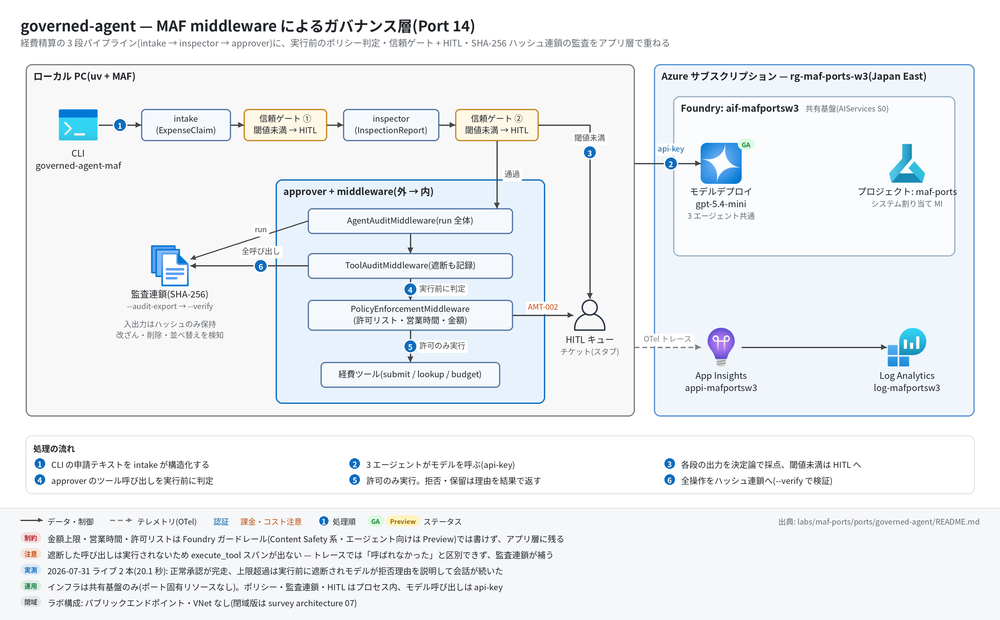

governed-agent 実行ガイド
対象:
labs/maf-ports/ports/governed-agent/(Port 14・パターン: MAF middleware によるガバナンス層 — ツール実行前の決定論ポリシー + 段間の信頼ゲート / HITL + ハッシュ連鎖監査)
最終確認: 2026-09-29 オフライン(65 passed・ruff clean・依存 agent-framework-core 1.19.0 / agent-framework-openai 1.14.4 / openai 3.20.0)/ ライブ: 2026-07-31(当時の構成 = agent-framework-core 1.13 / openai 2.51。Azure リソースは削除済み — 再デプロイ手順は §5)
正は本 Markdown。 人間用 HTML(同じディレクトリのrunbook.html)はpython3 labs/tools/build_runbooks.pyで生成する(HTML は直接編集しない)。設計判断と移植の学びは README。
1. このパターンで確かめること
- 経費申請 1 件が intake(構造化)→ 信頼ゲート ① → inspector(構造化)→ 信頼ゲート ② → approver(ツール付き)と流れ、approver のツール呼び出しは実行前に
PolicyEnforcementMiddlewareが判定すること: 許可 → 支払い / 拒否(TOOL-001非許可ツール・HOURS-001営業時間外・AMT-001ハード上限超過・AMT-003不正金額)→ ツール本体は実行されず、拒否理由がツール結果としてモデルに戻って会話が続く / 承認必須(AMT-002自動承認上限超過)→ HITL チケット発行。 - 全操作(ケース開閉・各エージェント実行・ゲート判定・遮断を含む全ツール呼び出し)が 1 本の SHA-256 ハッシュ連鎖に載り、エクスポート JSON をモデルも Foundry もなしで後から
--verifyで検証できること(改ざん・削除・並べ替えを検知)。 - 技術選定上の意味: 金額上限・営業時間のような決定論の業務ルールは Foundry ガードレール(Content Safety 系の判定語彙)では書けず、アプリ層(middleware)に残る。ガードレールとは代替ではなく積層(README の対比表・学び 2)。
2. 構成

| コンポーネント | 役割 | 課金 |
|---|---|---|
| MAF Agent ×3(ローカル: intake / inspector / approver) | 構造化出力 2 段 + ツール付き承認。approver に middleware 3 つ(外 → 内: AgentAuditMiddleware → ToolAuditMiddleware → PolicyEnforcementMiddleware) |
なし |
| ガバナンスランタイム(ローカル、プロセス内) | PolicyEngine・TrustGate・ApprovalQueue(HITL スタブ)・ExpenseLedger(支払い台帳)・AuditTrail(ハッシュ連鎖) |
なし |
| モデルデプロイ(共有基盤、gpt-5.4-mini) | 3 エージェントの呼び出し(1 ケース 3〜5 回程度。ゲートで止まれば減る) | トークン従量 |
| Application Insights(共有基盤) | OTel トレース | 取り込み量従量 |
| 本ポート固有の Azure リソース | なし(infra/main.bicep は existing 参照と出力のみ) |
— |
3. 前提
| 区分 | 必要なもの | 備考 |
|---|---|---|
| ツール | uv(Python 3.11 以上。uv が取得。検証は 3.13) | オフライン実行と --verify はこれだけ |
| Azure(ライブのみ) | 共有基盤(infra/shared.bicep)。本ポート固有リソースなし | 課金あり |
| 権限 | API キー(FOUNDRY_API_KEY)のみ |
Entra ID の RBAC は不要 |
環境変数(labs/maf-ports/.env。雛形は labs/maf-ports/.env.example。ライブ実行時のみ必要):
| 変数 | 用途 | 取得元 |
|---|---|---|
FOUNDRY_OPENAI_V1_ENDPOINT |
チャット呼び出し先(https://<foundry>.openai.azure.com/openai/v1) |
shared.bicep 出力 openaiV1Endpoint |
FOUNDRY_MODEL |
モデルデプロイ名 | shared.bicep 出力 modelDeploymentName |
FOUNDRY_API_KEY |
API キー | az cognitiveservices account keys list -n aif-<baseName> -g <rg> |
APPLICATIONINSIGHTS_CONNECTION_STRING |
トレース送信先(未設定ならトレース無効) | shared.bicep 出力 appInsightsConnectionString |
4. オフライン実行(Azure 不要・無料)
cd labs/maf-ports/ports/governed-agent
uv sync --extra dev
uv run pytest # 期待: 65 passed, 2 deselected(ネットワーク不要)
uv run ruff check . # 期待: All checks passed!オフラインテストは fake をチャットクライアント境界に置く(tests/conftest.py の ScriptedChatClient)ので、実 Agent + 本物の function-calling ループ + 本物の middleware パイプラインが回る。固定している主な挙動:
- 拒否されたツールは本体が実行されず(台帳の
executed_callsが空)、2 回目のモデル呼び出しに構造化拒否が function_result として渡る(test_denied_tool_is_never_executed/test_hard_limit_denial_blocks_payment) - 営業時間外は
HOURS-001、承認バンドは HITL チケット付きの保留(test_after_hours_denial/test_approval_band_enqueues_hitl_ticket) - middleware の発火順序
agent_pre → [chat_pre → chat_post](モデル呼び出しごと)→ function_pre/post(ツールごと)→ agent_post(test_middleware_firing_order) -
MiddlewareTerminationは short-circuit と違い function-calling ループ全体を止める(test_middleware_termination_stops_the_whole_loop) - 監査は遮断された呼び出しも記録し、ポリシー判定は
context.metadataで内 → 外に渡る(test_audit_chain_records_denied_and_allowed_calls/test_pending_call_detail_includes_ticket_id) - ハッシュ連鎖は改ざん・削除・並べ替えを検知し、エクスポート単体で再検証できる(
tests/test_audit.py) - ルール評価順は「許可リスト → 営業時間 → 金額」の first-terminal-wins(
test_allowlist_wins_over_amount/test_business_hours_wins_over_amount) - 評価データ 7 ケースの決定論経路(ゲート・ポリシー・最終ステータス)と実行経路の一致(
tests/test_eval_dataset.py/tests/test_pipeline.py)
監査連鎖の検証だけはモデルなしで試せる(エクスポート JSON はライブ実行の --audit-export で作る):
uv run governed-agent-maf --verify runs/audit.json # 期待: chain OK: <N> entries, no tampering detected(exit 0)5. ライブ実行(Azure 必要・課金あり)
5.1 デプロイ
# 共有基盤が未作成なら先に作る(labs/maf-ports/README.md「実行の前提」と infra/shared.bicep 冒頭コメント)
cd labs/maf-ports
az group create -n <rg> -l japaneast
az deployment group create -g <rg> -f infra/shared.bicep \
-p baseName=<baseName> modelName=gpt-5.4-mini modelVersion=<版> modelCapacity=10
# 本ポートの Bicep は existing 参照と出力だけ(新規リソースなし)
cd ports/governed-agent
az deployment group create -g <rg> -f infra/main.bicep -p baseName=<baseName>出力を labs/maf-ports/.env に転記する(§3 の表)。
5.2 実行
営業時間ルール(平日 9〜18 時、ローカルの壁時計)があるので、夜間・週末に既定のまま実行すると支払いが全部 HOURS-001 で遮断される。再現性のため --now で平日の昼に固定するのが基本。
cd labs/maf-ports/ports/governed-agent
uv sync --extra dev --extra live
# 1 件
uv run governed-agent-maf --now 2026-07-29T10:30 \
--request "Client dinner \$180 on 2026-07-24, receipt RCPT-2201, employee E-1042, sales, meals."
# デモ 4 件(正常 / 承認バンド / ハード上限超過 / 曖昧な申請)+ 監査連鎖のエクスポート → 独立検証
uv run governed-agent-maf --now 2026-07-29T10:30 --script tests/data/expense_requests.txt \
--audit-export runs/audit.json --json --output runs/cases.json
uv run governed-agent-maf --verify runs/audit.json
# 対話(1 行 = 1 申請。/audit で連鎖の要約、/queue で承認待ち、/quit で終了)
uv run governed-agent-maf --now 2026-07-29T10:30
uv run pytest -m live # 期待: 2 passed(7 月の実測 20.1 秒。時刻は内部で平日昼に固定済み)主なオプション: --threshold(信頼ゲート閾値、既定 40)/ --auto-approve-limit(既定 1000 USD)/ --hard-limit(既定 5000 USD)/ --now(ISO 形式の現在時刻)/ --timeout(1 ケースの秒数、既定 180)/ --json / --output / --audit-export / --verify。
期待される出力の例(書式は CLI どおり。値はオフラインの scripted 実行で作った例 — approver の文面はモデル次第):
=== case-001: paid ===
claim: E-1042 / meals / $180.00
intake trust: 75 (gold) -> pass:75
inspection: approve / trust 70 (gold) -> pass:70
payment: PAY-0001 $180.00
approver: Approved and paid (PAY-0001).
audit: 8 entries, chain OKデモスクリプト 4 件の期待ステータス(平日昼に固定した場合):
| 申請 | 期待ステータス | 決め手 |
|---|---|---|
| client dinner $180(領収書あり) | paid(PAY-0001) |
全ルール通過(allow:POLICY-DEFAULT) |
| conference trip $3,200 | pending_human_approval(HITL-0001) |
AMT-002(自動承認上限 $1,000 超) |
| workstation $12,000 | blocked_by_policy |
AMT-001(ハード上限 $5,000 超)— 支払いツールは実行されない |
| "I spent some money on stuff..." | escalated_low_trust |
信頼ゲート ① で減点(金額・社員 ID・領収書なし)→ inspector に進まない |
6. 確認観点
| 確認 | # | 観点 | 確認方法 | 期待結果 |
|---|---|---|---|---|
| 1 | 正常系: 承認まで完走 | §5.2 の 1 件実行(--now 付き) |
=== case-001: paid ===、payment: PAY-0001 $180.00、audit: ... chain OK |
|
| 2 | 分岐: 実行前遮断 | デモ 3 件目($12,000) | blocked_by_policy。payment: 行がなく、approver の返答が AMT-001 と理由に触れている(拒否がツール結果としてモデルに戻り会話が続いた証拠) |
|
| 3 | 分岐: HITL | デモ 2 件目($3,200)→ 対話モードなら /queue |
pending_human_approval と HITL: HITL-0001 [tool_call] Amount $3,200.00 exceeds the auto-approve limit ... |
|
| 4 | 分岐: 信頼ゲート | デモ 4 件目(曖昧な申請) | escalated_low_trust、inspection: 行が出ない(ゲート ① で止まる) |
|
| 5 | 分岐: 営業時間 | --now 2026-08-01T22:00 で 1 件目を実行 |
blocked_by_policy(HOURS-001)。同じ申請が時刻だけで結果を変える |
|
| 6 | 監査連鎖の独立検証 | --verify runs/audit.json → JSON の任意エントリの detail を 1 文字書き換えて再度 --verify |
1 回目 chain OK: ...(exit 0)、改ざん後 chain BROKEN: ...(exit 1) |
|
| 7 | パターン固有: 監査とトレースの違い | runs/audit.json の tool:submit_reimbursement エントリと §7 の KQL を突き合わせる |
監査連鎖には deny:AMT-001 のエントリがあるのに、トレースには遮断した呼び出しの execute_tool スパンがない(実行されていないから)— README 学び 4 |
|
| 8 | 観測: トレース到達 | §7 の KQL | invoke_agent expense_intake / expense_inspector / expense_approver と、支払えたケースの execute_tool submit_reimbursement |
|
| 9 | コスト・後片付け | §8 | 本ポート固有リソースはない。使わない期間は共有基盤の RG ごと削除 |
7. トレース・評価の確認
az monitor app-insights query --app appi-<baseName> -g <rg> \
--analytics-query "dependencies | where timestamp > ago(30m) | summarize count() by name | order by name asc"- 期待するスパン名:
invoke_agent expense_intake/invoke_agent expense_inspector/invoke_agent expense_approver、chat <モデル名>(approver は function-calling ループの反復ごとに複数)、execute_tool submit_reimbursement(許可されたときだけ)/execute_tool lookup_expense_policy/execute_tool check_budget(モデルが呼んだとき) - ハッシュ連鎖には生の入出力は入らない(ハッシュのみ)。内容を追うのはトレース、順序と非改ざんの証明は連鎖、という役割分担
- 評価:
tests/eval_dataset.jsonl(7 ケース)はオフラインの決定論検証用(§4)。クラウド評価は本ポートでは実施していない
8. 片付け
az group delete -n <rg> --yes --no-wait # 共有基盤ごと削除(ステートレス。Bicep で再現可)ローカルの runs/*.json(申請テキストを含むケース結果と監査連鎖)は不要なら削除する。
9. トラブルシューティング
| 症状 | 原因 | 対処 |
|---|---|---|
全ケースが blocked_by_policy になる |
営業時間外に --now なしで実行した(HOURS-001) |
--now 2026-07-29T10:30 のように平日の昼を指定 |
1 件目が paid にならず no_action |
approver が submit_reimbursement を呼ばなかった(ツール選択はモデル裁量)、または inspector が needs_information を出した |
--json で report.recommendation と approver の返答を確認。申請文に社員 ID・金額・日付・領収書番号を揃える |
意図せず escalated_low_trust になる |
inspector の確信度が低い・critical 所見でゲート ② が落ちた | --threshold 30 などで閾値を下げて挙動を比較(既定 40) |
自作の関数 middleware を足したら MiddlewareException: Cannot determine middleware type |
from __future__ import annotations 下では第 1 引数の型注釈で種別を判定できない(1.19 でも同じ)(casebook P-F04) |
@function_middleware / @agent_middleware / @chat_middleware を明示するかクラス形態にする |
error: 環境変数が未設定: ... |
labs/maf-ports/.env に 3 点がない |
§3 の表どおり転記(--verify だけなら不要) |
TimeoutError(1 ケース 180 秒超) |
モデル応答の遅延 | --timeout 300 で再実行 |
10. 関連・更新履歴
- 設計判断と学び: README
- ガードレール(サービス層)の GA / プレビューと介入ポイント: features/06 安全性・ガードレール
- 詰まりどころ(middleware の型推定・short-circuit の 2 方式): casebook 02 I. MAF とフレームワーク
- 今後の選択肢(README「検証結果(2026-09-29 最新化チェック)」): MAF 1.19 の
MiddlewareFailure(fail-closed の中断)・MiddlewareBundle/ AGENT-HOOKS(実験的)・agent_framework.security(実験的)
| 日付 | 内容 |
|---|---|
| 2026-09-29 | 初版(依存を agent-framework-core 1.19.0 / openai 3.20.0 に更新。middleware API は 1.13 と同一でコード改修なし。構成図を v2(日本語・処理順バッジ・注記帯)に更新) |